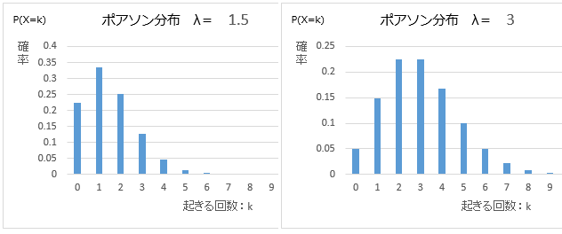

ポアソン分布とは「一定時間内にランダムなイベントが何回発生するか」 を表す分布のことです。
ポアソン分布とは
例えば「地震の発生回数」を「ランダムなイベント」とみなすと、「これから100年間のうちに 地震が発生する回数」がポアソン分布で表現できます。
「ランダムなイベント」とは大雑把に言うと、「起こる確率が一定である」ようなイベントのことです。
なお、地震の発生回数は厳密にはランダムなイベントではありません。1回地震が起こると、直後には 余震が発生しやすくなります。
ポアソン分布の確率変数
ポアソン分布を表す確率変数はP(k)=e-λ(λk/k!)です。
数式だけではイメージが湧きにくいと思うので、λ=1.5,3.0のポアソン分布を見ていくと、次のようになります。
つまり、単位時間あたり平均λ回起こるようなランダムなイベントが、単位時間にk回発生する確率 がP(k)です。
例えば、（長い時間の平均を取ると）1年に3回起こるようなランダムなイベントが、これから1年のうちに ちょうど2回起こる確率は
P(2)=e-3(32/2!)≒0.22
となります。ちなみに、eはネイピア数（自然対数の底）で、およそ2.7です。
1回も起こらない確率
ポアソン分布を使って、単位時間あたり平均1階起こるようなランダムなイベントが、単位時間に 1回も発生しない確率を計算すると
P(0)=e-1(10/0!)≒0.37
つまり、およそ37%です。ただし、0!=1であることを使いました。
トップページへ